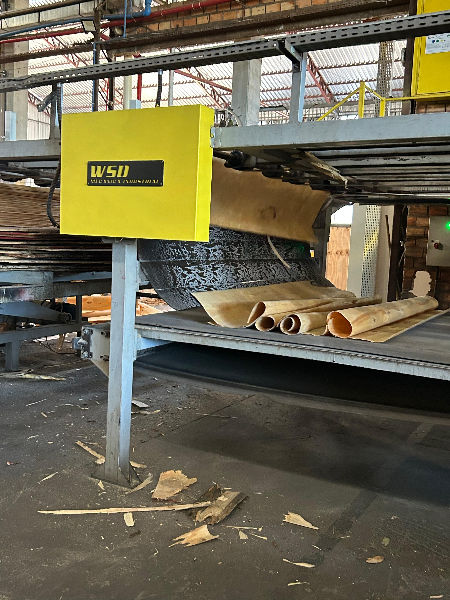
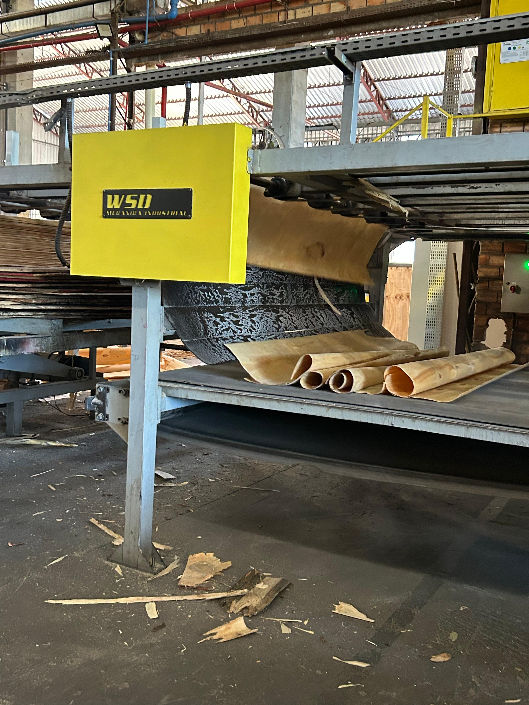

ㅤEm Clevelândia, o cultivo de Pinus é muito mais que uma atividade comercial. Ele faz parte da vida das pessoas que, com esforço diário, dedicam-se ao plantio, ao manejo e à colheita dessas árvores que hoje se tornaram símbolo de desenvolvimento para o município. A escolha pelo Pinus surgiu da necessidade de encontrar culturas que se adaptassem bem ao clima e ao solo da região. Com o passar dos anos, a experiência mostrou que essa espécie trazia não apenas retorno financeiro, mas também benefícios ambientais. As plantações ajudam a preservar o solo, protegem nascentes e contribuem para a captura de carbono, um aliado importante na luta contra o aquecimento global.
ㅤNas indústrias locais, a madeira ganha novos formatos e funções. Ela é transformada em painéis, tábuas, papel e até em fonte de energia. Cada etapa dessa cadeia produtiva gera empregos e movimenta a economia, fortalecendo a comunidade e oferecendo novas oportunidades para as futuras gerações. Em Clevelândia, o cultivo de Pinus é tratado com responsabilidade. O manejo sustentável garante que a produção continue por muitos anos, sempre com o olhar atento de quem sabe que o equilíbrio entre a produção e o cuidado ambiental é o caminho para um futuro melhor.
ㅤPara essa pesquisa, foi realizado uma visita à Madeireira 5 Irmãos, em Clevelândia, foi possível observar de perto o trabalho intenso e cuidadoso que envolve a produção de compensados. Cada etapa do processo é bastante preciso e organizado, desde o recebimento das toras até a transformação final em painéis compensados. Além da fabricação, também é possível perceber o cuidado com o aproveitamento total da matéria-prima. Os resíduos gerados ao longo da produção, como serragem e cavacos, são destinados para geração de energia, contribuindo para uma produção mais sustentável. A visita proporcionou uma melhor aprendizagem sobre o processo, mostrou um dos produtos do pinus e justificou a importância do cultivo de agroflorestas para economia local.
A seguir, imagens do Cultivo do Pinus:


A seguir, imagens sobre a Produção do Compensado:
 

Todas as imagens foram registradas pela autora, durante a visita tecnica realizada na Madereira 5 Irmãos, localizada em Clevelândia Paraná.